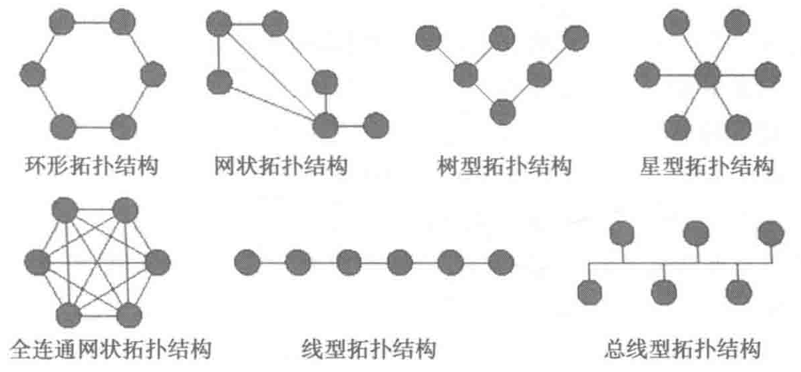

| 不同等级数据中心通信系统分级参考 | ||||
|---|---|---|---|---|
| 级 别 | 一级 | 二级 | 三级 | 四级 |
| 布线、机架、机柜和路由满足 TIA 标准 | 是 | 是 | 是 | 是 |
| 不同运营商入口路由间隔 20m 以上 | 否 | 是 | 是 | 是 |
| 不同运营商多线接入 | 否 | 否 | 是 | 是 |
| 冗余运营商接入机房 | 否 | 否 | 是 | 是 |
| 冗余 MDA | 否 | 否 | 否 | 是 |
| 冗余 IDA | 否 | 否 | 否 | 是 |
| 冗余主干布线路由 | 否 | 否 | 是 | 是 |
| 冗余水平布线路由 | 否 | 否 | 否 | 是 |
| 路由器和交换机有冗余电源和处理器 | 否 | 是 | 是 | 是 |
| 多路由器和交换机用于冗余 | 否 | 否 | 是 | 是 |
| 配线架、插座和布线线缆标识符合 TIA-606-B；机柜机架前后进行标识 | 是 | 是 | 是 | 是 |
| 跳线两端的标签名称与所连接线缆相同 | 否 | 是 | 是 | 是 |
| 配线架和跳线编号表符合 ANSI/TIA-606-B 标准 | 否 | 否 | 是 | 是 |
7.2 网络的拓扑结构
网络拓扑结构是各种网元设备之间的互联和关系。网络拓扑结构可以归结为两个基本要素：节点和链路。节点代表任意数量的网络设备，如路由器、交换机、服务器、手机、照相机或笔记本电脑。互连节点的功能顾名思义：它们把其他节点连接在一起。互连节点的实例包括路由器或交换机等。
图 7-1 显示了七种基本的拓扑结构：
